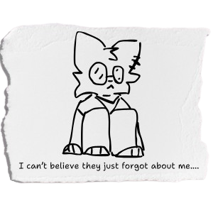

"Crying over spilled coffee"
"Per aspera..."
From Diary of Lux - Translated from german
"I am now writing under my *new* bed... Today, things surely happened.
I evacuated my homeland, Neue Berlin, due to the recent tsunami.
The alerts informed the people that the enormous wall of water had formed
because of the THT-2000 meteor crash (the meteor landed a few kilometers from the bay).
However, something tells me this is not the truth... I have seen no meteor... Anyways, when
I was running away with my family, I ended up falling to the ground, and without any surprise,
they left me behind and drove the way towards the nearest city (Maugenburgs)...
Thus I had to go alone and on my own feet.
On my way I found a man standing there and looking straight at the horizon
(probably because the tsunami was coming from that direction). I yelled to him that
I knew a good way to the city's exit road... But he said he didn't want to run way from death...
Well, I did so I ran away anyways.
Also, I am starting to think I have schizophrenia, 'cuz I saw a tall fox in front of me in my way
out of the city..."

"...Ad astra!"
"...As I managed to reach out the gates of the city,
I saw there a very familiar car: it was my dad's car! My family was staying at a hotel
near the city's entrance. There I got in just to hear my mother yelling at me just like
the bad mommy she is...
I couldn't keep my feelings locked away anymore, I let my wrath take control over me
and said the absolute truth on her face... And guess what? She kicked me out the hotel she
not even own, just like the GREAT mother she is.
By chance I remembered I had my wallet with me, so I walked around the new town, looking
for a good place to spend time drinking anything I could drink as a minor.
Wandering for a few minutes I found a Café named "Lacte Café", I like the name... I entered in
and ordered a cup Capuccino and drank it slowly but shaking in axiety... Well, at this point
I am starting to think it's actually very normal."
"Hedgehog's dilemma"
"After a few sips, I was on my way to pay for the capuccino and a pretzel but suddenly
I've fallen to the hard dry ground, which has been covered by a few drips of blood coming from
my nose."
- Oh my god, oh my god! Are you okay? You're bleeding... - The person behind my fall said so while tried to clean
the blood drips off. They were as worried as I for sure. Looks like they've fallen on me harmelessly, but I hadn't the same luck...
They tried to get me on their lap while they were holding a small napkin against my nose holes
in order to cease the bleed.
- Here you go... how are you feelin' right you, little? Lemme pay the coffee and your lunch... - They gently got my wallet inside my pocket and paid
the bill theirself.
Just a small note, their name is Gabby Karnube. I am now siting in an hospital bed, taking these notes on my diary at their side.